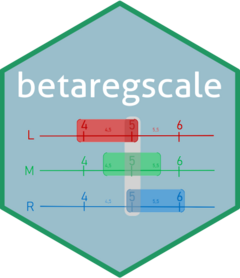

Model comparison by analysis of deviance (LR test) for `brs`
Source:R/anova-methods.R
anova.brs.RdModel comparison by analysis of deviance (LR test) for `brs`
Value
An object of class "anova" and "data.frame" with
model-wise log-likelihood, information criteria, and (optionally) LR test
columns.
References
Lopes, J. E. (2023). Modelos de regressao beta para dados de escala. Master's dissertation, Universidade Federal do Parana, Curitiba. URI: https://hdl.handle.net/1884/86624.
Ferrari, S. L. P., and Cribari-Neto, F. (2004). Beta regression for modelling rates and proportions. Journal of Applied Statistics, 31(7), 799–815. doi:10.1080/0266476042000214501
Examples
# \donttest{
dat <- data.frame(
y = c(
0, 5, 20, 50, 75, 90, 100, 30, 60, 45,
10, 40, 55, 70, 85, 25, 35, 65, 80, 15
),
x1 = rep(c(1, 2), 10),
x2 = rep(c(0, 0, 1, 1), 5)
)
prep <- brs_prep(dat, ncuts = 100)
#> brs_prep: n = 20 | exact = 0, left = 1, right = 1, interval = 18
m1 <- brs(y ~ 1, data = prep)
#> Warning: the standard deviation is zero
m2 <- brs(y ~ x1, data = prep)
m3 <- brs(y ~ x1 + x2, data = prep)
anova(m1, m2, m3)
#> Df logLik AIC BIC Chisq Chi Df Pr(>Chisq)
#> M1 (brs) 2 -92.735 189.47 191.46
#> M2 (brs) 3 -92.652 191.30 194.29 0.1650 1 0.6846
#> M3 (brs) 4 -92.393 192.79 196.77 0.5175 1 0.4719
# }